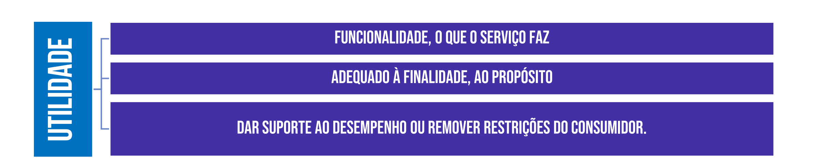
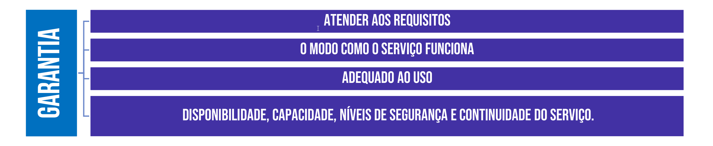

ITIL, or Information Technology Infrastructure Library, is a well-known set of IT best practices designed to assist businesses in aligning their IT services with customer and business needs. Services include IT-related assets, accessibility, and resources that deliver value and benefits to customers.
Assets: a useful or valuable thing.
Aquele que participa da elaboração do produto.
Aquele que participa da elaboração do produto..
Aquele que apenas usa.
De que adianta elaborar o melhor produto ou serviço se ele não entregar valor? Se o produto ou serviço não for seguro, estar 100% disponível e não oferecer as funcionalidades relevantes para suportar as necessidades do consumidor?  
O modelo de quatro dimensões da ITIL existe para suportar uma abordagem holística. A ITIL define quatro dimensões que são críticas para o gerenciamento de serviços. Este modelo apresenta quatro perspectivas críticas para a promoção eficiente e eficaz de valor. Essa perspectiva é para os clientes e outras partes interessadas(stakeholders), na forma de produtos e serviços.